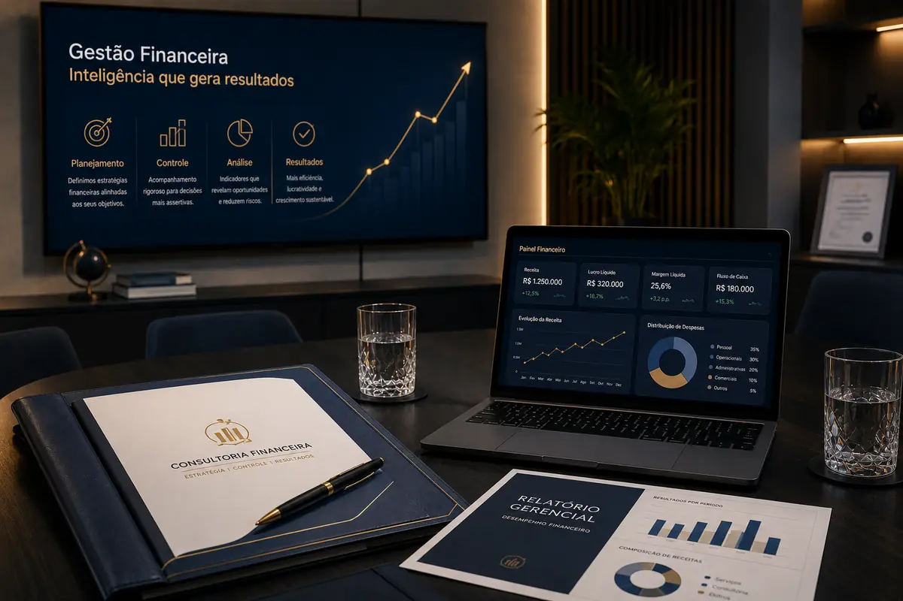

Gestão financeira terceirizada
Controle
Rotina financeira estruturada
Clareza
Indicadores para decisão
Previsibilidade
Fluxo de caixa acompanhado
Controle financeiro para empresas que precisam decidir com mais segurança.
Estruture sua rotina financeira com controle de caixa, contas a pagar, contas a receber e relatórios gerenciais claros para conduzir o crescimento da empresa com mais previsibilidade.
Problemas comuns
O financeiro da empresa precisa acompanhar o ritmo do negócio.
Sem uma rotina financeira estruturada, a empresa perde clareza sobre caixa, compromissos, recebíveis e capacidade real de crescimento.
Caixa sem previsibilidade
Sem projeção de entradas e saídas, a empresa decide no escuro e reduz sua capacidade de planejar pagamentos, investimentos e expansão.
Rotina financeira sem padrão
Pagamentos, recebimentos e vencimentos sem processo geram retrabalho, atrasos e perda de controle sobre a operação.
Falta de visão gerencial
Sem relatórios claros, o empresário não enxerga margens, custos, despesas e evolução financeira com precisão.
Decisões sem indicadores
Sem indicadores gerenciais, decisões estratégicas passam a depender de percepção, e não de dados financeiros organizados.
Finanças misturadas
Quando finanças pessoais e empresariais se misturam, o resultado real da operação fica distorcido.
Crescimento sem planejamento
Sem planejamento financeiro, a empresa cresce com menos controle sobre caixa, custos, obrigações e compromissos futuros.
Atuação consultiva
Uma gestão financeira mais clara, organizada e orientada por decisões.
A Deive Pereira Gestão Financeira Terceirizada apoia empresas que precisam profissionalizar a rotina financeira, transformar dados dispersos em informações úteis e criar uma base mais segura para decisões empresariais.
O trabalho combina organização operacional, acompanhamento recorrente e visão gerencial para que o empresário entenda melhor o caixa, reduza riscos e conduza o crescimento com mais previsibilidade.
Organização financeira
Rotina acompanhada
Relatórios gerenciais
Decisões com dados
Soluções
Soluções para transformar a rotina financeira em uma base de decisão.
Serviços desenhados para organizar processos financeiros, aumentar previsibilidade e melhorar a clareza sobre os números da empresa.
BPO Financeiro
Estruturação e acompanhamento da rotina financeira para empresas que precisam de mais controle sem aumentar a complexidade interna.
Fluxo de Caixa
Acompanhamento de entradas, saídas e projeções para antecipar necessidades de caixa e apoiar decisões com mais segurança.
Contas a Pagar
Controle de obrigações, vencimentos e pagamentos para reduzir atrasos, retrabalho e falhas operacionais.
Relatórios Gerenciais
Relatórios claros para acompanhar desempenho, identificar desvios e orientar decisões financeiras com mais precisão.
Diagnóstico Financeiro
Mapeamento da situação financeira atual para identificar riscos, gargalos, oportunidades e prioridades de organização.
Contas a Receber
Acompanhamento de recebíveis, inadimplência e previsões de entrada para fortalecer o controle do caixa.
Método de trabalho
Um método objetivo para organizar, acompanhar e melhorar o financeiro.
A atuação começa pelo entendimento da realidade financeira da empresa e avança para organização, padronização de processos, acompanhamento de indicadores e recomendações práticas.
- Diagnóstico inicialLevantamento do cenário financeiro, principais riscos e prioridades.
- Organização da basePadronização de informações, contas, categorias e controles essenciais.
- Rotina financeiraDefinição de fluxo para pagamentos, recebimentos, registros e conferências.
- Relatórios gerenciaisConstrução de indicadores para leitura clara da saúde financeira.
- Acompanhamento recorrenteAnálise contínua dos números e recomendações para evolução da gestão.

Benefícios
Mais controle, menos improviso e decisões financeiras mais seguras.
Previsibilidade de caixa
Mais clareza sobre compromissos, recebimentos e necessidades futuras da empresa.
Menos falhas na rotina
Processos financeiros mais claros reduzem atrasos, retrabalho e inconsistências.
Decisões com indicadores
Relatórios gerenciais ajudam o empresário a decidir com base em informações reais.
Mais foco na operação
Com o financeiro mais organizado, o empresário ganha tempo para vendas, equipe e crescimento.
Perguntas frequentes
Dúvidas comuns sobre gestão financeira terceirizada.
É a organização e acompanhamento da rotina financeira da empresa por um profissional externo, com foco em controle, previsibilidade e relatórios gerenciais.
Não. A gestão financeira complementa a contabilidade. Enquanto a contabilidade cuida das obrigações fiscais e legais, a gestão financeira apoia a operação, os controles internos e a tomada de decisão.
É indicado para empresas que precisam organizar contas, acompanhar caixa, reduzir erros operacionais e ter relatórios mais claros para decisões.
O diagnóstico avalia a situação atual da rotina financeira, identifica gargalos, riscos e prioridades para criar um plano de organização.
Sim. O acompanhamento pode incluir relatórios recorrentes com indicadores relevantes para gestão, análise de desempenho e tomada de decisão.
Sim. O atendimento pode ser realizado de forma remota, mantendo organização, acompanhamento e comunicação recorrente com a empresa.
Sim. O acompanhamento financeiro exige confidencialidade, organização e tratamento responsável das informações compartilhadas pela empresa.
Sim. O acompanhamento financeiro exige confidencialidade, organização e tratamento responsável das informações compartilhadas pela empresa.
Sim. O acompanhamento financeiro exige confidencialidade, organiza??o e tratamento respons?vel das informa??es compartilhadas pela empresa.
Contato
Organize o financeiro da sua empresa com mais clareza.
Solicite um diagnóstico financeiro e entenda quais pontos da rotina podem ser organizados para melhorar controle, previsibilidade e tomada de decisão.
WhatsApp
Solicite um diagnóstico financeiro pelo WhatsApp.
Instagram
@deive.financeiro
Atendimento remoto
Atendimento remoto para empresas que desejam profissionalizar a gestão financeira.